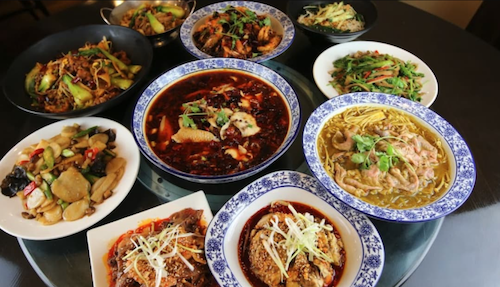

About Chinese Dishes
Chinese cuisine known as zhongcan, is a traditional style of cooking that emphasizes diverse flavors, meticulous techniques, and the philosophy of balance. Rooted in thousands of years of history and deeply influenced by Confucianism, Taoism, and regional customs, zhōngcān reflects China's rich cultural heritage and respect for harmony between taste, nutrition, and aesthetics. Signature dishes such as Peking Duck, mapo tofu, and xiao long bao highlight the variety of regional styles—from the bold spice of Sichuan to the delicate freshness of Cantonese cooking. Celebrated globally for its complexity, symbolism, and communal nature, Chinese cuisine is not only a culinary experience but also a reflection of history, family, and tradition.
Feeling Indecisive? Let’s Pick a Dish for You!
Click the image to order on Uber Eats.
Mala Restaurant
Spicy Dry Pot
- Spicy, cozy, and customizable dry pot, a Boston fan favorite.
- Mix and match up to six veggies (bamboo shoots, cauliflower, seaweed).
- Add pork belly or sliced beef; duck blood is a bit chewy.
- Bold, smoky, savory flavors with a wok-fried aroma.
- Perfect for newcomers and dry pot lovers alike.
My Happy Hunan Kitchen
Stewed Tofu with Duck Egg Yolk and Pork Floss
- A must-order dish at My Happy Hunan Kitchen in Boston.
- Flavor combo of rich salted duck egg yolk and fluffy pork floss.
- Soft, silky tofu soaked in creamy, savory egg yolk sauce.
- Perfect balance of umami and a hint of sweetness.
- Ideal for a cozy solo meal or sharing with friends.
Hao Shi Guang
Traditional Mao Xue Wang
- Bold, spicy dish loaded with classic ingredients like duck blood, beef tripe, and tofu skin.
- Deep red, fiery broth packed with Sichuan peppercorn numbing flavor.
- Rich aroma that fills the table the moment it arrives.
- Super generous portion—perfect for sharing or solo indulgence.
- Pro tip: Order a bowl of rice to soak up the spicy broth.